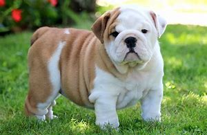

los cuidado para bulldog son Alimentación adecuada: Los Bulldogs Ingleses tienden a tener problemas de sobrepeso, por lo que es crucial proporcionarles una dieta balanceada y controlar la cantidad de alimento que consumen1. Actividad física moderada: Aunque no son los perros más activos, necesitan ejercicio regular para mantenerse saludables. Paseos diarios y tiempo de juego son importantes2. Cuidado de sus arrugas: Los pliegues en la piel de los Bulldogs requieren atención especial. Limpia y seca estas áreas regularmente para evitar infecciones o irritaciones3. Higiene dental: Cepilla sus dientes para prevenir problemas dentales y mal aliento. Utiliza productos específicos para perros y consulta a tu veterinario para obtener recomendaciones1. Vigilancia de problemas respiratorios: Los Bulldogs Ingleses son braquicéfalos, lo que significa que tienen una estructura facial achatada. Esto puede causar dificultades respiratorias. Mantén un ojo en su respiración y consulta al veterinario si notas señales de problemas respiratorios1. Revisiones veterinarias regulares: Programa visitas periódicas al veterinario para chequeos generales, vacunas y detección temprana de cualquier problema de salud1.
.jpg)